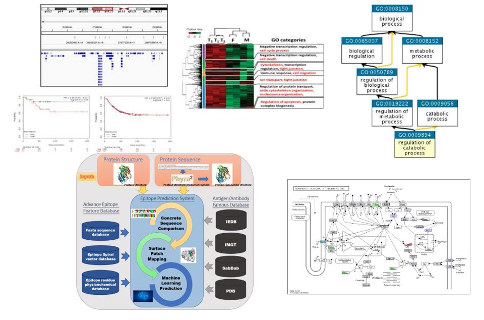
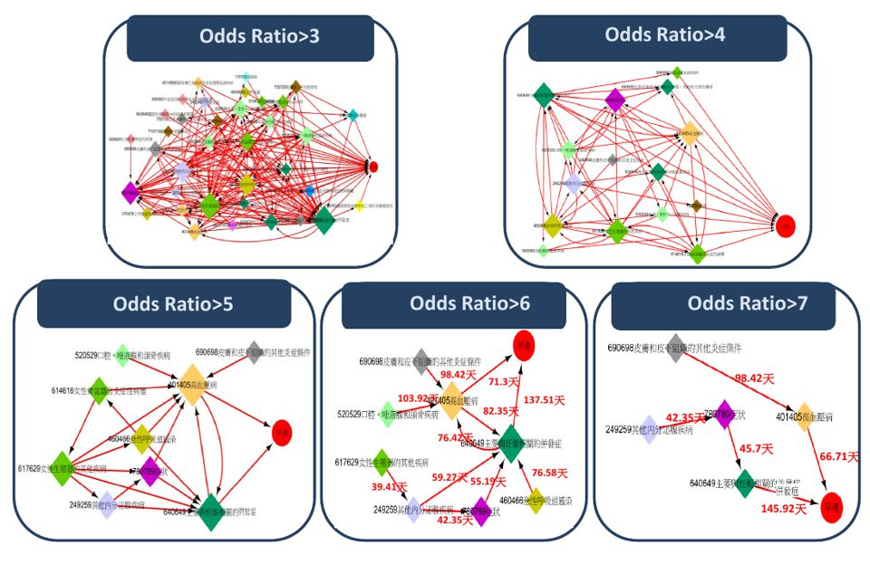
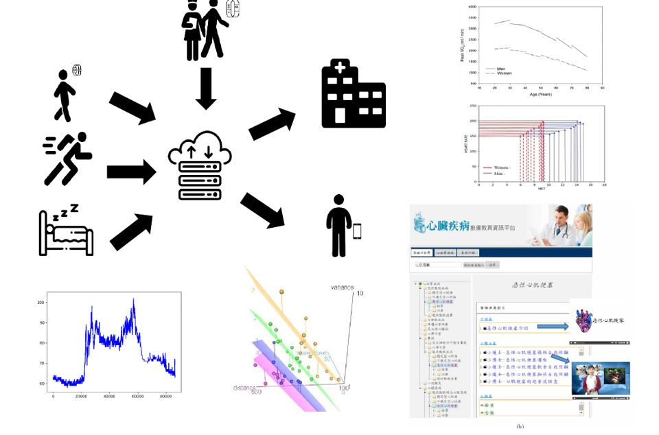
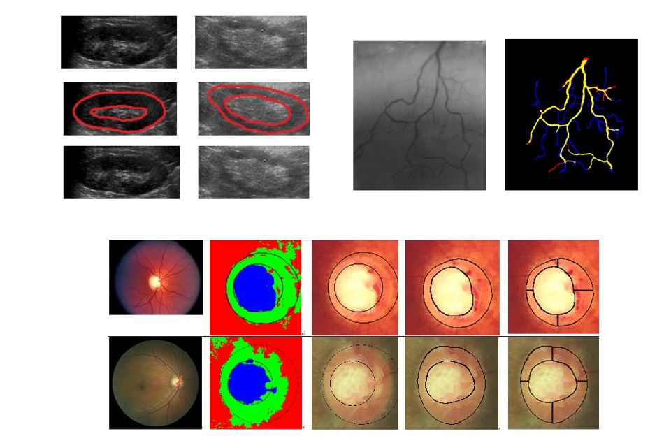

01
Research & Projects
研究與計畫
本實驗室以生物資訊與醫學資訊為核心，結合機器學習、影像分析與物聯網技術，致力於癌症生物標記發現、幼兒發展遲緩診斷與個人化醫療等應用研究。
研究主題 Research Areas

02
03
04研究成果 Publications & Outputs
主持之研究計畫 Funded Projects共 30 項 · 主持 21 項
-
結合共病疾病軌跡分析及創新智慧型穿戴式裝置用於心臟衰竭患者之醫療照護
108/08 ~ 109/07已結案 -
以次世代定序技術開發水產生物健康腸胃道菌相生物製劑並增進其腸道免疫功能（提升石斑魚免疫力及抗病能力的腸道菌相確認及其應用 2/3）
108/05 ~ 109/04已結案 -
結合早產婦女疾病軌跡樣式與外顯子定序技術協助建構早產生物標記測試套件
107/11 ~ 108/10已結案 -
HIF、Survivin與Epo基因網路調節氧化壓力與促進神經分化的機制 (3/3)
107/08 ~ 108/07已結案 -
以次世代定序技術開發水產生物健康腸胃道菌相生物製劑 (2/3)
107/05 ~ 108/04已結案 -
新型物種之功能基因群辨識及其相關串聯重複標誌搜尋 (2/2)
106/08 ~ 107/07已結案 -
HIF、Survivin與Epo基因網路 (2/3)
106/08 ~ 107/07已結案 -
以生物標記預測早產及早產兒腦部傷害
106/05 ~ 107/04已結案 -
以次世代定序技術開發水產生物健康腸胃道菌相生物製劑 (1/3)
106/05 ~ 107/04已結案 -
開發3D列印支撐功能核心模組 (2/3)
105/11 ~ 106/10已結案 -
HIF、Survivin與Epo基因網路 (1/3)
105/08 ~ 106/07已結案 -
新型物種之功能基因群辨識及其相關串聯重複標誌搜尋 (1/2)
105/08 ~ 106/07已結案 -
醫療巨量資料檢視、分析及動態視覺化工具開發
105/08 ~ 106/07已結案 -
次世代整合系統應用於心臟衰竭之預後分析及策略性醫療照護
104/09 ~ 105/08已結案 -
開發3D列印支撐功能核心模組 (1/3)
104/11 ~ 105/10已結案 -
低氧訊息網路的系統與演化生物學研究（子計畫4）(3/3)
104/08 ~ 105/07已結案 -
養殖魚種骨骼發育及抗病分子標記之資料庫建置與輔助育種應用研究
104/08 ~ 105/07已結案 -
比較轉錄體資料集之正規化技術研究
103/08 ~ 104/07已結案 -
低氧訊息網路（子計畫4）(2/3)
103/08 ~ 104/07已結案 -
建立以病人為中心之疾病教育網絡軟體
102/01 ~ 104/07已結案 -
低氧誘導反應之轉錄體比對平台開發與互連動態生物訊息路徑建構
102/08 ~ 103/07已結案 -
基於物理化學特性及內容組合特徵進行構型抗原表位與抗體對位預測
102/08 ~ 103/07已結案 -
台灣農業生物多樣性基因資料庫整合建置及跨物種比對核心技術服務
102/01 ~ 102/12已結案 -
台灣農業生物多樣性基因體資料庫及跨物種比對核心技術之建置與服務
101/01 ~ 101/12已結案 -
台灣農業生物多樣性基因體資料庫及跨物種比對核心技術之建置與服務
100/02 ~ 101/01已結案 -
慢性腎病之超音波影像指標測量分析與臨床分期相關性之研究
100/05 ~ 100/04已結案 -
CMBB生物資訊核心技術開發與應用服務
100/04 ~ 100/12已結案 -
蛋白質功能區域自動切割、分類及表面比對之研究 (2/2)
99/08 ~ 100/07已結案 -
B細胞抗原決定位預測、評估與資料庫之建立
96/08 ~ 97/07已結案 -
基於序列組合特徵之快速多重蛋白質結構排比技術
95/08 ~ 96/07已結案